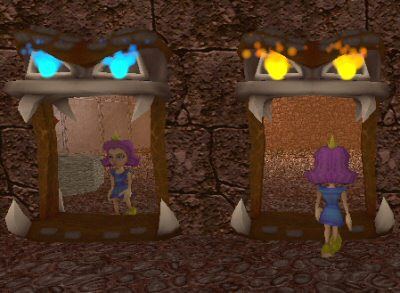
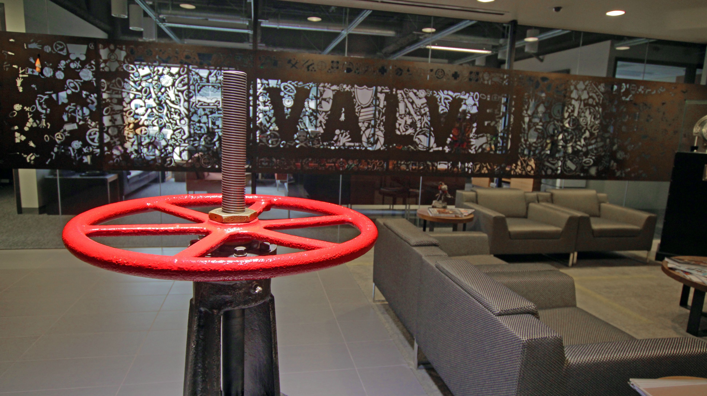

Предшественницей Portal является игра Narbacular Drop, которая разрабатывалась группой студентов из Института технологий DigiPen. Игра была выпущена и предоставлена в свободный доступ. Впоследствии создатели Narbacular Drop, выступавшие под названием «Nuclear Monkey Software», устроили презентацию своей игры в офисе Valve Corporation, в ходе которой, по словам Дага Ломбарди, растроганный директор Гейб Ньюэлл, не дождавшись конца демонстрации, вскочил со стула, чуть ли не обнял студентов и заявил, что им немедленно стоит войти в состав Valve. Дебютным проектом нового отделения, состоявшего из четырёх программистов и трёх дизайнеров из института DigiPen, стала Portal.
В основе Portal лежит модифицированная версия движка Source, использованного ранее в игре Half-Life 2 и её сиквелах. Технологически Portal относится к Orange Box-играм, поскольку входит в набор The Orange Box, все игры которого построены на единой версии движка Source. Игра поддерживает динамическое построение теней, самозатеняющиеся объекты, систему частиц и кинематографическую физику. Поскольку игра разрабатывалась на основе Half-Life 2 и использует её ресурсы, в ней сохранились все виды оружия, противников, персонажей и транспортных средств из Half-Life 2. Хотя они и не присутствуют в сюжетной линии, их можно вызвать с помощью консольных команд или использовать при создании пользовательской карты.